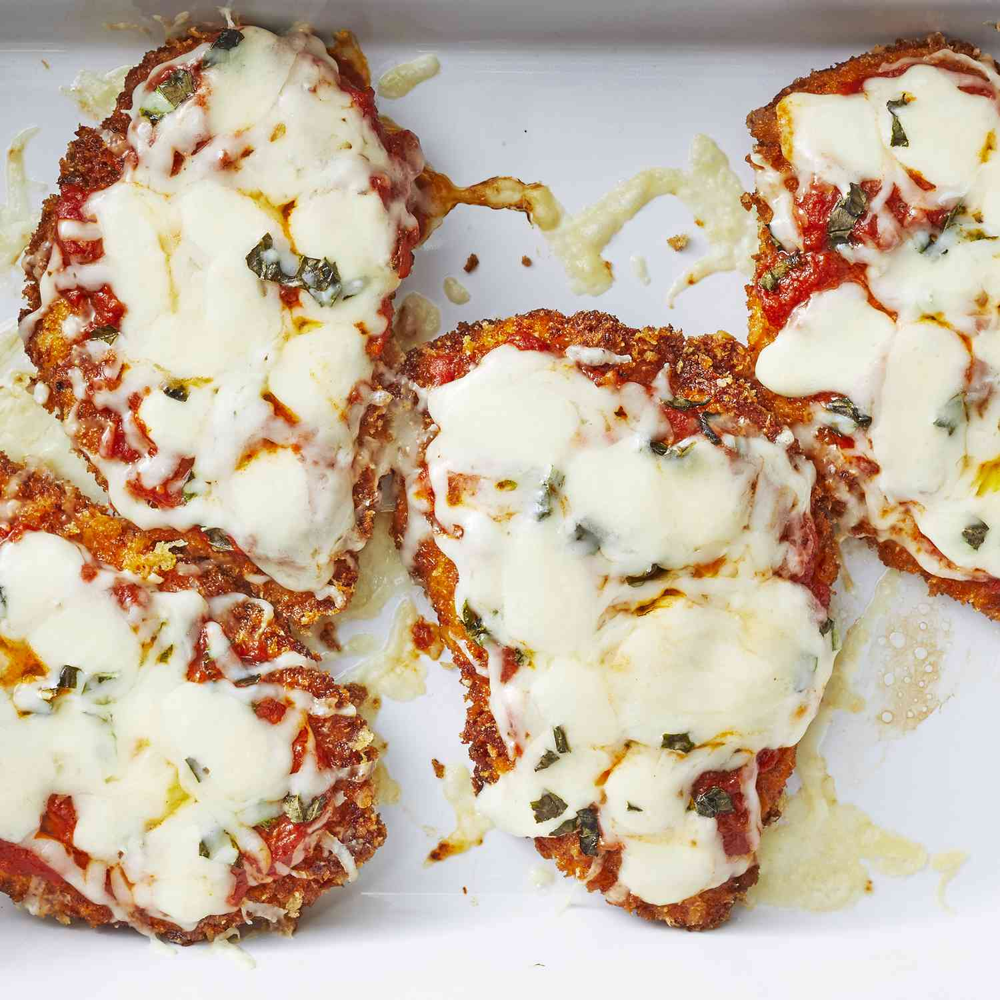

This is an easy simple delicious chicken parmesan recipe for everyone to enjoy.
Gather the ingredients. Preheat an oven to 450 degrees F (230 degrees C).
Place chicken breast between two sheets of heavy plastic (resealable freezer bags work well) on a solid, level surface. Firmly pound chicken with the smooth side of a meat mallet to a thickness of 1/2-inch.
Season chicken thoroughly with salt and pepper. Using a sifter or strainer; sprinkle flour over chicken breast, ebenly coating both sides.
Beat eggs in a shallow bowl and set aside. Mix bread crumbs and 1/2 cup Parmesan cheese in a seperate bowl, set aside. Dip flour-coated chicken breast in beaten eggs. Transfer breast to the bread crumb mixture, pressing crumbs into both sides. Repeat for each breast. Let chicken rest for 10 to 15 minutes.
Heat 1/2 inch olive oil in large skillet on medium-high heat until it begins to shimmer. Cook chicken in hot oil until golden, about 2 minutes per side. The chicken will finish cooking in the oven.
Transfer chicken to a baking dish. Top each breast with 2 tablespoons tomato sauce. Layer each chicken breast with equal amounts of mozzarella cheese, fresh basil, and provolone cheese. Sprinkle remaining Parmesan over top and drizzle each with 1/2 teaspoon olive oil.
Bake in the preheated oven until cheese is browned and bubbly and chicken breast are no longer oink in the center, 15 to 20 minutes. An instant-read thermometer inserted into the center should read at least 165 degrees F (74 degrees C).
Let cool then serve and enjpy!